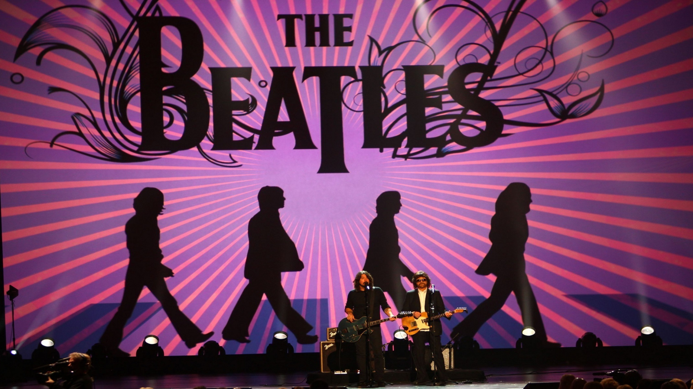
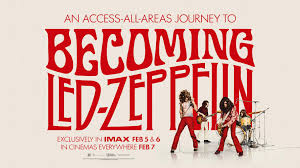
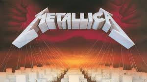
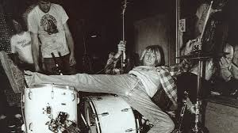
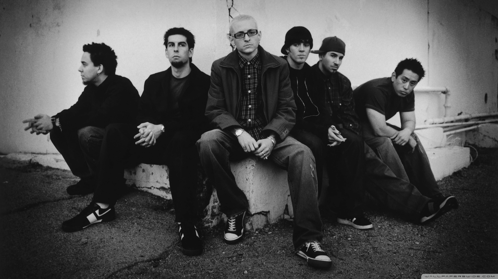
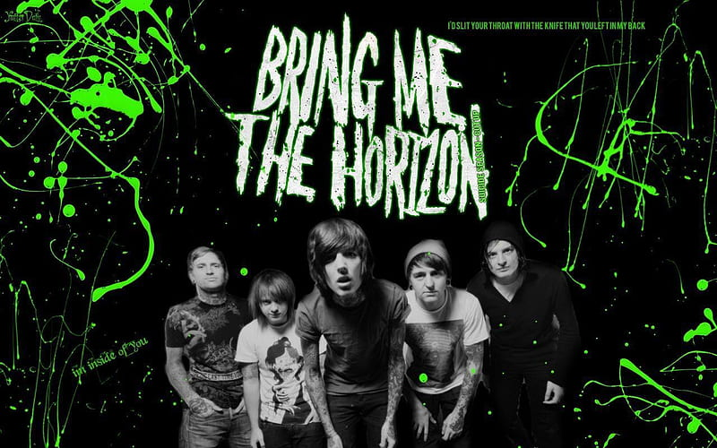

Рок — это одно из самых влиятельных направлений популярной музыки,
возникшее в середине XX века. Его основой стали такие жанры, как блюз,
ритм-н-блюз и кантри. Главной особенностью рок-музыки является использование
электрогитары, бас-гитары и ударных инструментов.
Рок-музыка отличается не только звучанием, но и особой культурой.
Она стала символом свободы, самовыражения и протеста против социальных норм.
В разные периоды рок отражал настроение общества — от оптимизма 1960-х до
мрачной рефлексии 1990-х годов.
Одной из ключевых особенностей рока является его разнообразие.
Со временем появилось множество поджанров: от лёгкого классического рока
до экстремальных форм металла. Каждый из них имеет свои особенности,
аудиторию и стиль исполнения.
Металл — это более тяжёлое направление рока, сформировавшееся в конце
1960-х и начале 1970-х годов. Он отличается мощным звучанием, агрессивными гитарными
риффами и зачастую мрачной тематикой текстов.
В отличие от классического рока, металл делает акцент на скорости,
технической сложности и интенсивности звучания. Со временем металл
разделился на множество поджанров, таких как хэви-метал, трэш-метал,
блэк-метал и дэт-метал.
История рока
1960-е — Классический рок

Эпоха классического рока
В 1960-е годы рок-музыка выходит на международный уровень и становится одним из
главных музыкальных направлений в мире. Этот период известен как «британское вторжение»,
когда такие группы, как The Beatles,
The Rolling Stones и The Who,
завоевали мировую популярность.
Музыка становится более разнообразной и экспериментальной. Возникают новые стили,
такие как психоделический рок, а также арт-рок и
гаражный рок. Музыканты начинают активно использовать студийные технологии и эффекты.
1970-е — Хард-рок и металл

Развитие тяжёлого рока
В 1970-е годы рок-музыка становится значительно тяжелее и разнообразнее. Появляются
такие группы, как Led Zeppelin, Deep Purple и
Black Sabbath, которые формируют основу хард-рока и хэви-метала.
Параллельно развивается прогрессивный рок, представленный группами
Pink Floyd, Genesis и Yes.
Музыка становится более сложной, с длинными композициями, концептуальными альбомами
и философскими темами.
В этот период рок окончательно закрепляется как доминирующее направление мировой музыки,
а концерты превращаются в масштабные шоу с использованием света и спецэффектов.
1980-е — Панк и металл

Панк и трэш-метал
В 1980-е годы рок-музыка разделяется на множество направлений.
Панк-рок становится символом протеста и минимализма.
Яркие представители: Ramones,
Sex Pistols и The Clash.
В это же время активно развивается трэш-метал — более агрессивное и быстрое направление,
представленное группами Metallica, Slayer и
Megadeth.
Также популярность набирает глэм-рок, отличающийся ярким внешним видом и сценическими
шоу. Музыка становится более коммерческой и ориентированной на массовую аудиторию.
1990-е — Альтернатива и гранж

Гранж и альтернатива
В 1990-е годы рок-музыка переживает трансформацию. Появляется
гранж — более мрачное и эмоциональное направление.
Главные представители: Nirvana,
Pearl Jam и Soundgarden.
Альтернативный рок становится доминирующим направлением, предлагая новые формы
самовыражения и отход от классических стандартов рок-музыки.
Также развивается ню-метал, сочетающий элементы рока, хип-хопа и электроники.
Его представляют Linkin Park и Korn.
2000-е — Возрождение и новые направления

Рок-музыка 2000-х
В 2000-е годы рок-музыка переживает новое развитие и адаптацию к цифровой эпохе.
Несмотря на рост популярности поп-музыки и хип-хопа, рок остаётся важной частью
мировой музыкальной сцены.
Появляются такие группы, как Linkin Park, Muse,
Coldplay и Arctic Monkeys.
Они привносят новые элементы в рок, включая электронику, атмосферные звучания и эксперименты с формой.
Особенно популярным становится альтернативный рок и ню-метал,
сочетающий тяжёлые гитарные риффы с элементами рэпа и электронной музыки.
Музыкальная индустрия активно переходит в цифровой формат, что влияет на распространение и популярность
рок-музыки.
2010-е — настоящее время

Современная рок-сцена
В современное время рок-музыка продолжает активно развиваться, несмотря на сильную
конкуренцию со стороны других жанров. Современные группы часто смешивают рок с
электронной музыкой, попом и даже хип-хопом, создавая новые гибридные стили.
Одними из ярких представителей современной сцены являются
Bring Me The Horizon, Motionless In White и
Falling In Reverse. Эти группы сочетают элементы металкора,
альтернативного рока и электронной музыки.
Их творчество отличается разнообразием: от тяжёлых агрессивных треков до
мелодичных и атмосферных композиций. Это показывает, что рок остаётся гибким
жанром, способным адаптироваться к новым музыкальным тенденциям.
Поджанры рока и металла
Со временем рок-музыка разделилась на множество направлений, каждое из которых
имеет свои особенности звучания, тематику и аудиторию.